The translator side is a little bit complicated, but don't let it scare you.
1. The translator section is only available in desktop client
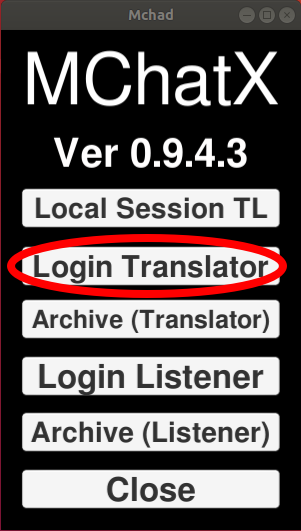2. Search for the room that you want.
You can use "Testing" or "Testing two" room for playing around, the pasword is "Test"(case sensitive)
Or if you're ready, you can go here to submit a form for a new room
3. Pick a room, enter password, and click Enter Button.
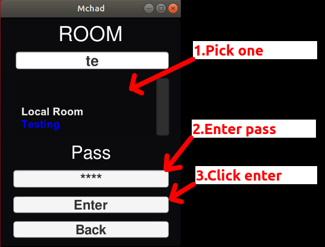1. If you want to TL in live chat, just pick the Local Room from the Room selection, there's no need to put in any password.
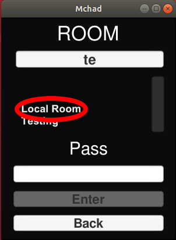Or if you're already logged inside another room, just click sync button in the extra panel.

2. Click Sync in the extension, it will then register the extension in the dekstop app.
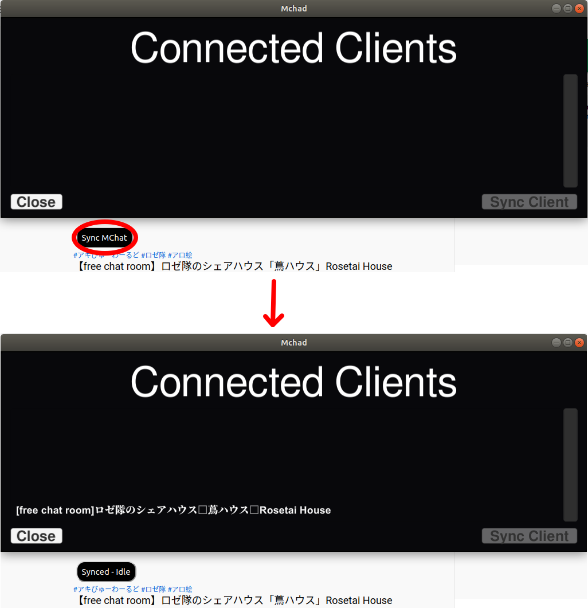3. Choose the title of the stream to connect and click Sync Client button.
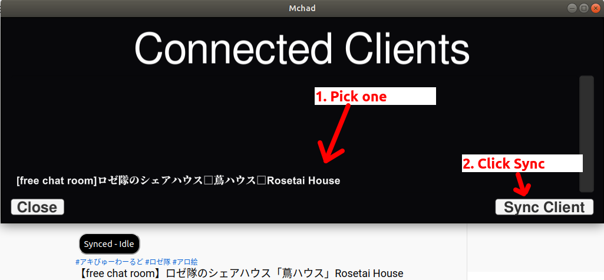4. The extension is properly synced if you get this notification in the extension and your input will be automatically bounced to the live TL.
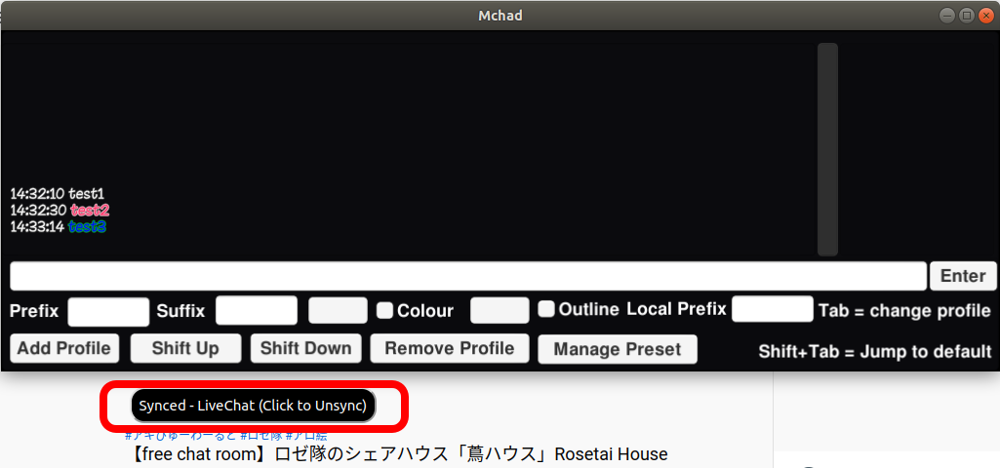Translator Panel located in the bottom part of the window in translator mode
The main idea of the UI is to minimalize the need to use mouse so the translator's hands can stay on the keyboard.
1. Just set the prefix, suffix, and the other profile setting, enter your message and press "Enter Button" or just press enter on your keyboard
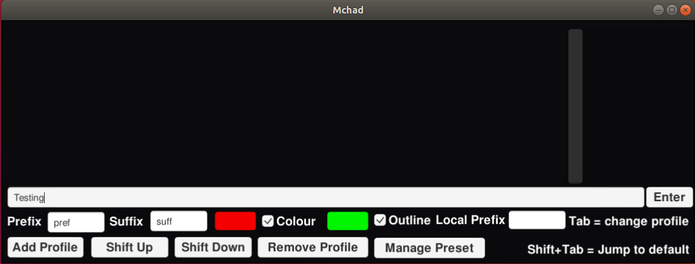2. Once your message is sent, the message input will be emptied and you can immediately write your next message
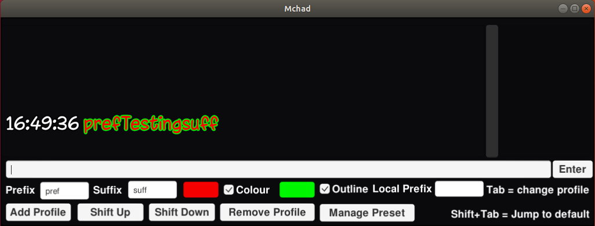3. You can click an entry to call extra panel to quickly delete or edit an entry
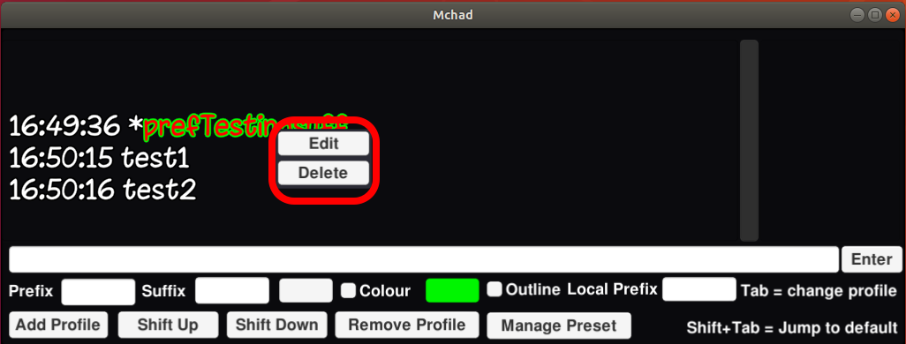4. The edit panel will automatically load the setting of the entry, you can quickly change the text colour and outline from saved preset using the dropdown menu
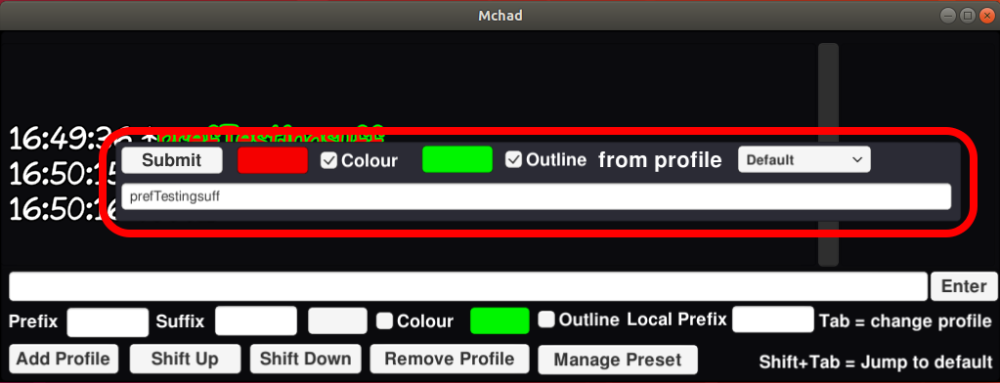1. Click "Password" button in the extra panel.
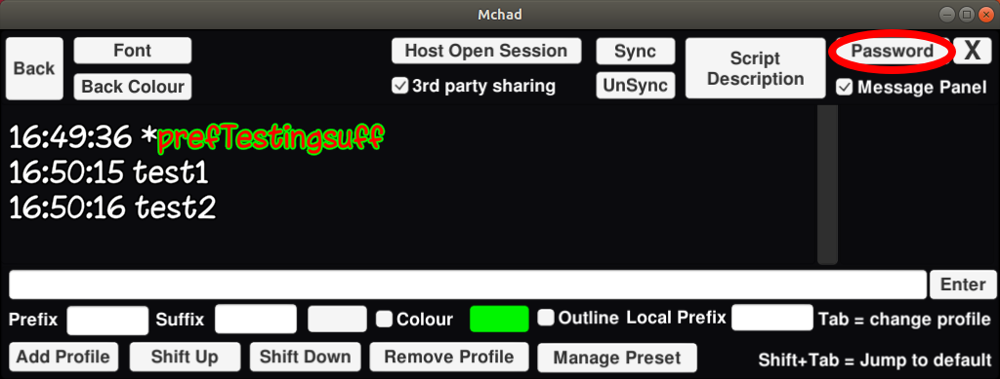2. A simple panel will come up.
THIS IS PASSWORD FOR LISTENER TO LOGIN, NOT TRANSLATOR.
3. To set password protection just check the box, put in your password, and click "save".
To remove password protection just uncheck the box and click "save".
The profile and preset control is located in the third row of the translator panel
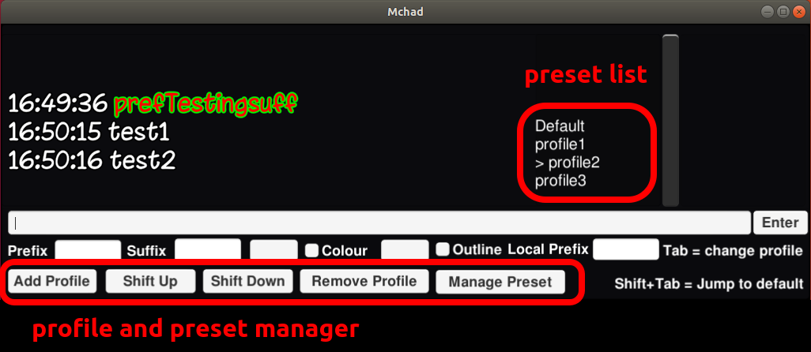You can open preset panel by clicking the "Manage Preset" button.
Preset is basically profile list saved locally in your machine that you can load anytime.
The save preset button will save the currently selected profile in the preset list.
The Public button is to swap between locally saved preset and the public preset saved in the database.
To add/delete prefix, just pick the prefix then click "add to list" to add to the profile list or "delete" button to delete the selected prefix
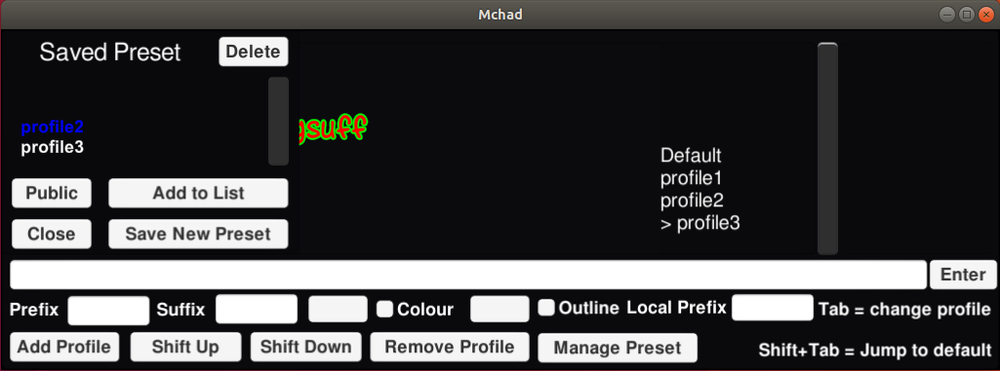1. You can reserve a scheduled live translation room by clicking "Schedule" in the navigation bar.
2. Handling the room reservation can be done by clicking the buttons in the top right panel in red circle.
Remember that you'll need the name of the room and the password of the room that you want to use to schedule a live translation session.
1. You can call an extra setting panel if you move your cursor to the upper area of the app window.
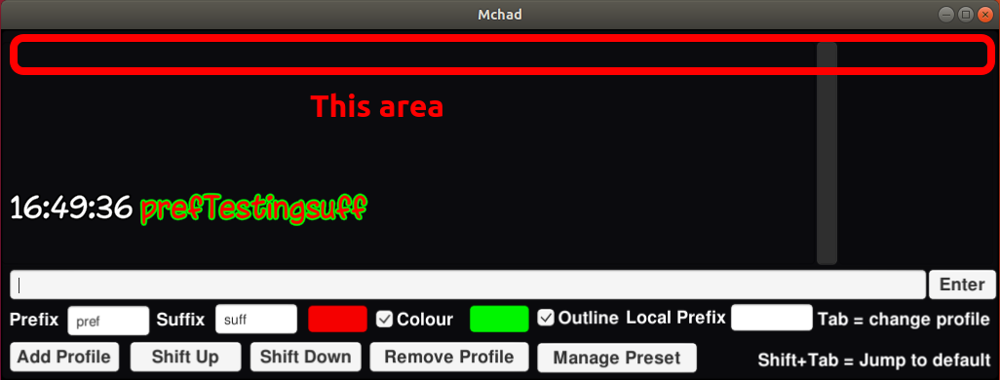2. Extra panel contains a lot of extra features.
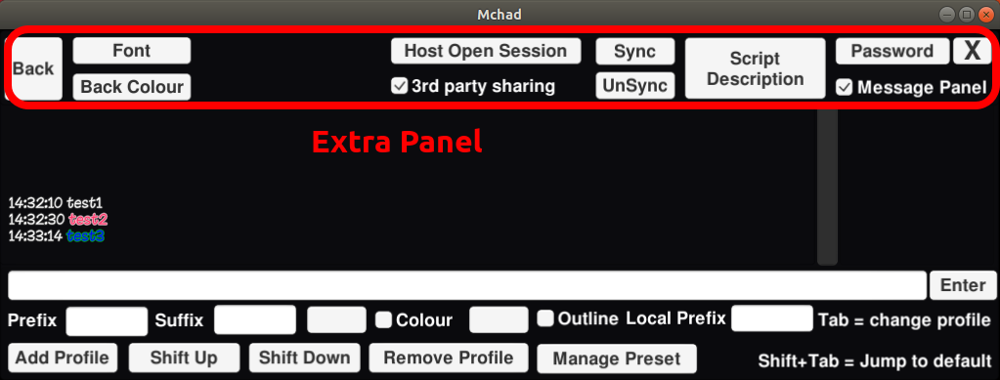1. Click Archive(Translator).
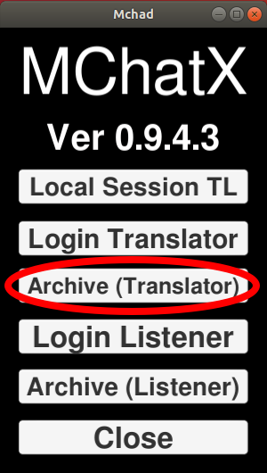2. Login with your room and your password.
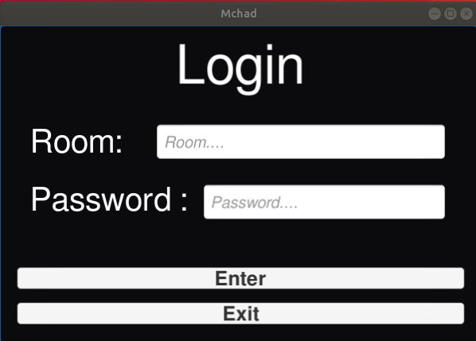3. Pick session that you want to edit, here you can also import or delete session.
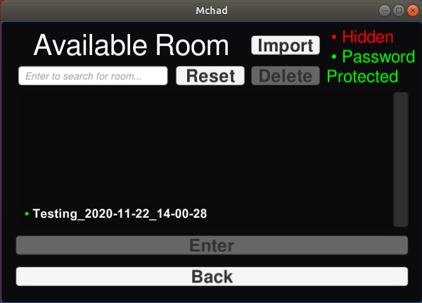This is the main view of the archive manager.
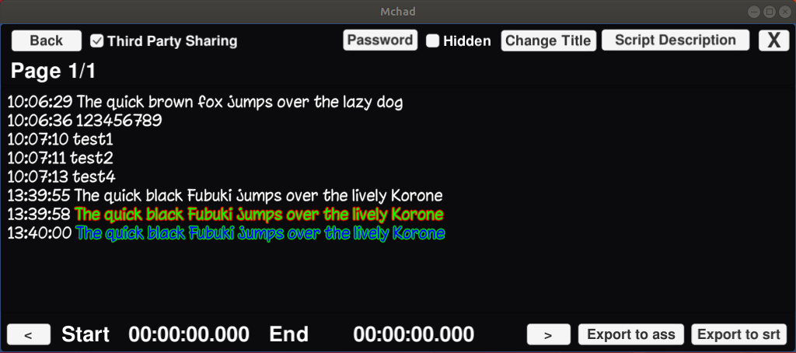4. To export script, click on the entry to set the start and the end point.
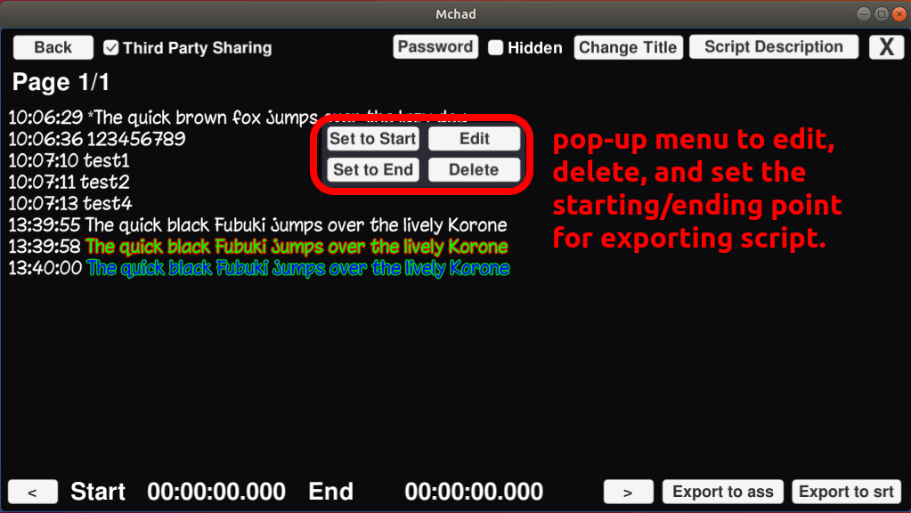5. Either export as .ass file compatible with Aegisub or to simple .srt file.
File will be saved in the "Saved_Archive" folder of the original executable.